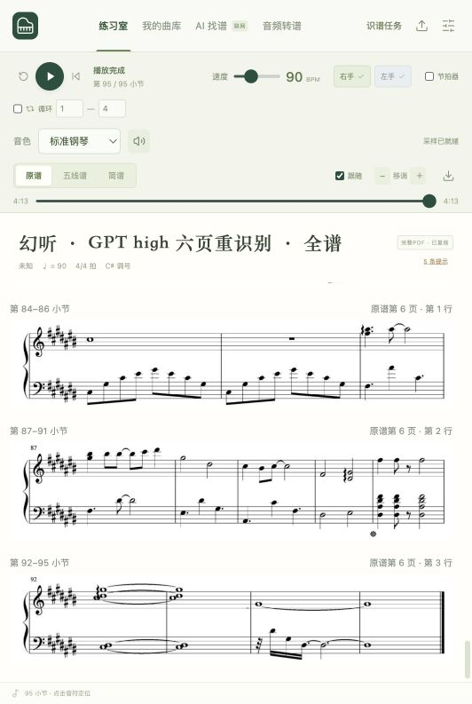
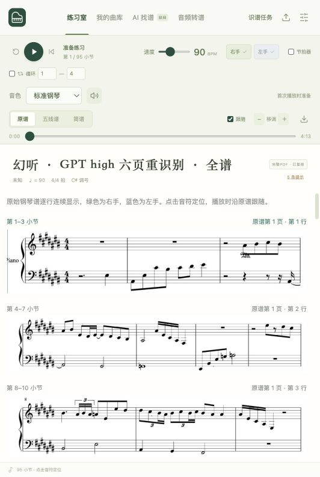

已重新读取全部六页钢琴原谱、逐行校对并导入本机曲库。名称：幻听 · GPT high 六页重识别 · 全谱。
| 完成范围 | 6 页 / 28 行 / 95 小节 / 380 拍 |
|---|---|
| 原谱音头 / 发声事件 | 1068 / 982（同音延音合并，全部音头保留） |
| 模型 | GPT-6.1 Sol · high；60 次发起请求；本机 OMR 0 次 |
| 端到端耗时 | 57分05秒（含核验、校对、重试恢复修复和播放验证） |
| 识别阶段墙钟 | 45分04秒；初次批处理 29分43秒 |
| 完整播放 | 90 BPM，原速自然播放至95/95小节，显示4:13/4:13 |
| 已报告 tokens | 332,759 = 输入127,450 + 输出205,309；另2次失败调用用量未知 |
| 共享账号额度 | 周额度剩余34% → 29%；增加使用5个百分点，不能归因为App单独消耗 |
| 验证 | 暂停继续、六页原谱跟随、刷新恢复通过；212项测试通过，生产构建通过 |
耗时范围：2026-10-17 20:44:24 至 21:41:29（北京时间）。识别阶段包含失败重试和恢复处理，人工校对与识别有重叠；阶段时长不可直接相加。
保留了 GPT 从原图读出的三个 C♯4、一个 D5 还原倚音，以及第75–76小节旧稿漏掉的低声部延音。人工调整了第60小节休止借时和第64小节两处倚音的播放借时，不将演奏约定差异称为音高识别错误。
末行初次要求清晰图片，第二次没有提交结果，两倍尺寸重试后识别及复读成功。恢复入口曾跳到首行，已修复锁定原行；多余复读调用已完整计入。四次失败请求均保留，其中两次未返回用量，332,759 tokens 是已报告下限。周额度是共享账号读数，包含 Codex 对话、开发校对及其他会话，不能换算成该 App 的精确消耗百分比。
播放证据来自实际浏览器从0到380拍的自然运行及六页跟谱截图；没有录制音频或进行波形级听音校验。保留旧版曲库，新版已单独保存。

